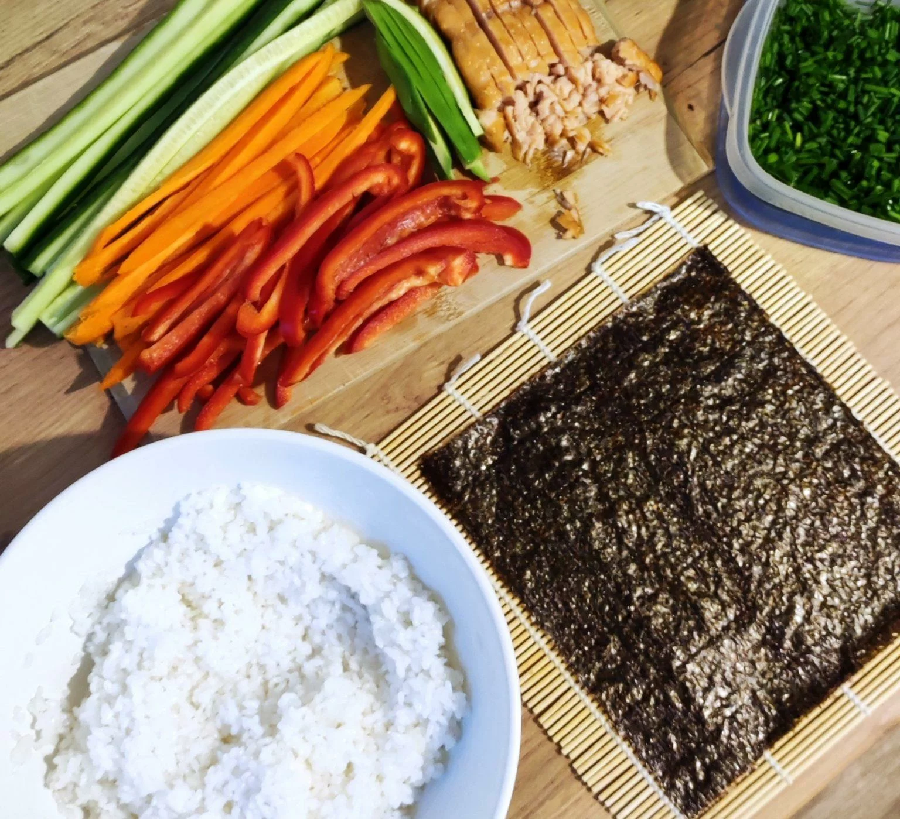
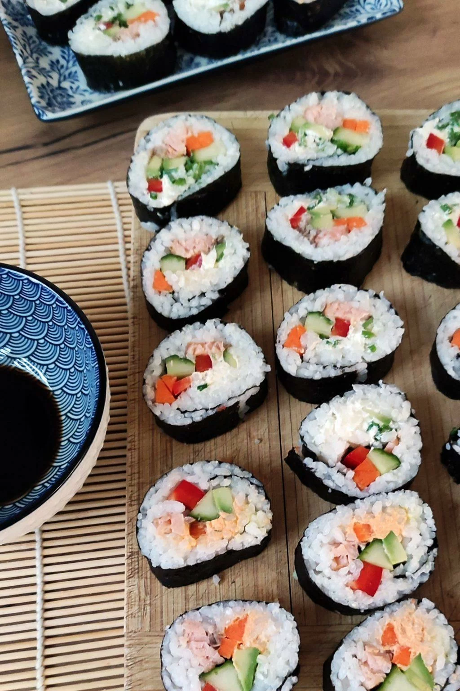

Ryż ugotować zgodnie z instrukcją na opakowaniu. A następnie, przygotować zaprawę do ryżu. W tym celu należy wymieszać 2 łyżki octu ryżowego z 2 łyżeczkami cukru i 1/2 łyżeczką soli. Zaprawą polać ugotowany ryż i dokładnie wymieszać. Ryż studzić pod przykryciem.
Rozkładamy matę do sushi. Na macie układamy listek nori, błyszczącą stroną do dołu. Do małej miseczki wlewamy zimnej wody i dodajemy łyżkę octu ryżowego. Woda będzie nam służyła do zwilżenia rąk, by łatwiej rozprowadzało się ryż. Zwilżamy dłoń i rozprowadzamy ostudzony ryż na listku nori. Powinien być w całości pokryty z wyjątkiem wąskiego paska od góry.
Na wyłożony ryż układamy nasze ulubione dodatki. Spokojnie mogą wystawać, obetnie się je później.
Zwijamy delikatnie naszą rolkę. Gotową rolkę kroimy na mniejsze kawałki. Przed podaniem sushi trzymamy w lodówce. Domowe sushi podajemy z wasabi, sosem sojowym, marynowanym imbirem i innymi ulubionymi dodatkami.
